Image Compression Function (R)
Given an image matrix x (n × p) and a target rank k, the
function below computes V = X′X, eigendecomposes it as
V = UΛU′, forms the PC scores Z = XU, and
reconstructs the rank-k approximation as the sum of the first k outer products
ziui′. Error is the Frobenius norm of the residual.
compress_image <- function(x, k) {
x <- as.matrix(x)
p <- ncol(x)
if (k < 1 || k > p) stop("k must be between 1 and ncol(x)")
V <- t(x) %*% x
eig <- eigen(V, symmetric = TRUE)
U <- eig$vectors
Z <- x %*% U
Uk <- U[, 1:k, drop = FALSE]
Zk <- Z[, 1:k, drop = FALSE]
Xk <- Zk %*% t(Uk)
err <- norm(x - Xk, type = "F")
list(approx = Xk, error = err)
}image1.csv 1000 × 100
Rank-k approximations, k = 1..10
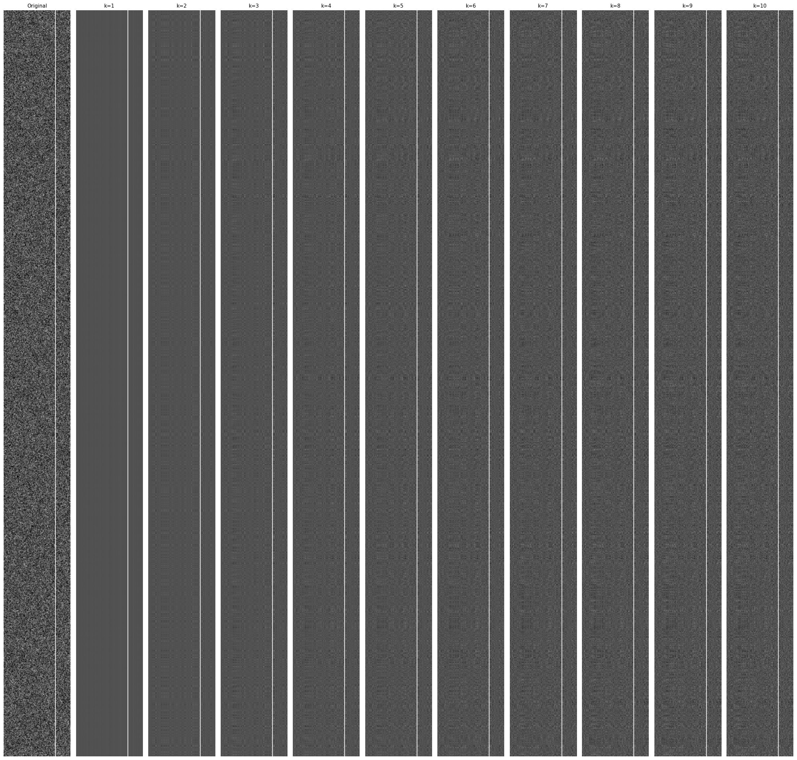
Approximation error vs. k
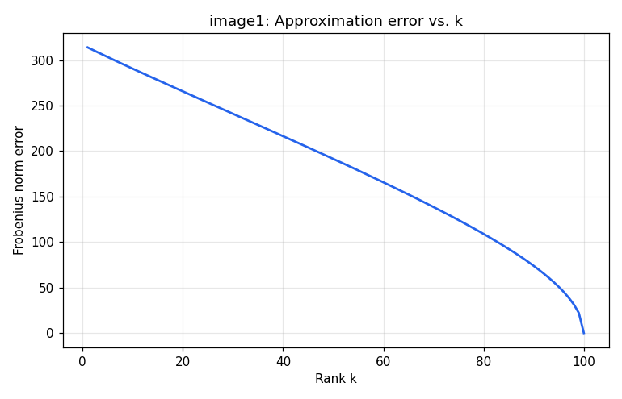
First eigenvector & first PC score
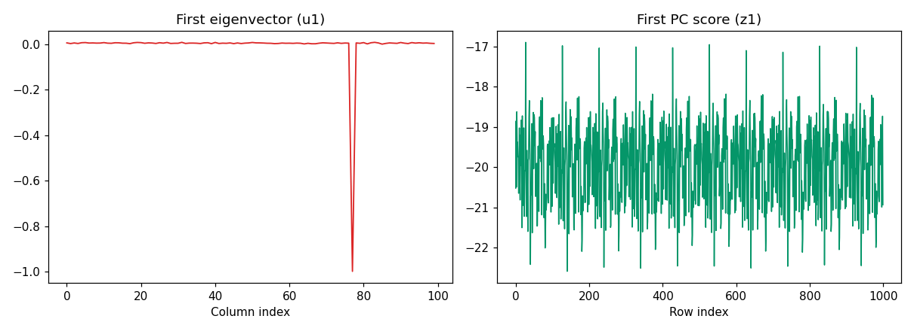
The first eigenvector is essentially zero everywhere except for one sharp spike around column 78 — it isolates the single bright vertical stripe that runs down the image. The first PC score fluctuates narrowly around a roughly constant value across all 1000 rows, meaning that stripe is present with about the same intensity in every row. Everything else in this image is unstructured pixel-level noise spread fairly evenly across all 100 columns, which is why this one component explains only a small share of the total variance (90% of variance isn't reached until k ≈ 38).
image2.csv 1000 × 100
Rank-k approximations, k = 1..10
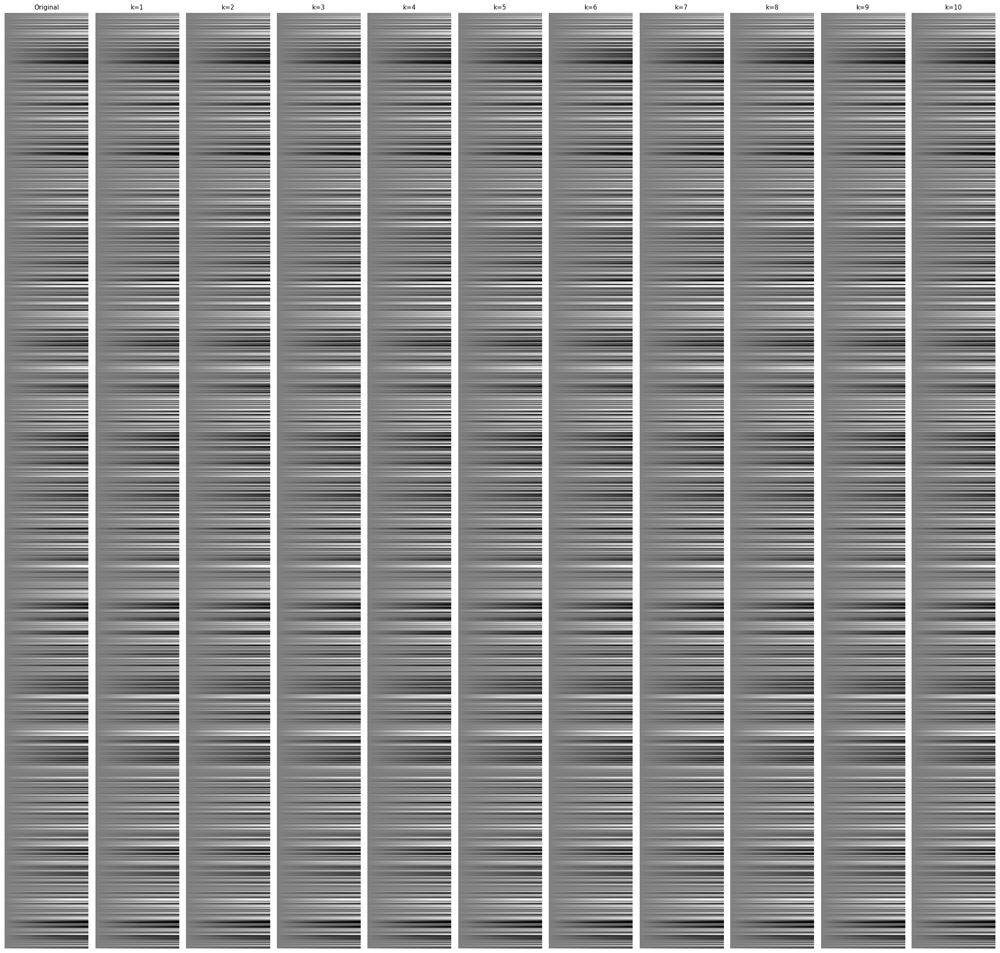
Approximation error vs. k
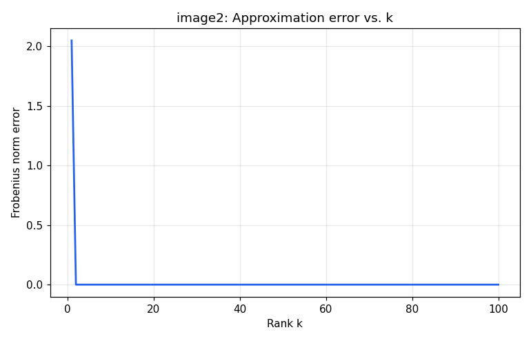
First eigenvector & first PC score
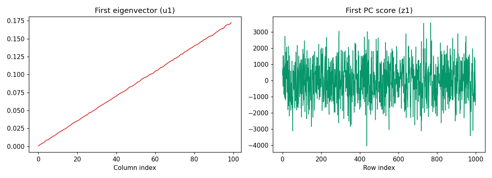
The first eigenvector increases smoothly and almost linearly from 0 to about 0.17 across the 100 columns — essentially a rank-1 brightness gradient shape. The first PC score varies strongly from row to row (roughly −4000 to 3500), scaling that same gradient up or down for each row. Multiplied together, this single outer product reproduces the horizontal banding pattern visible in the original image: each row is (to first order) just a scaled copy of the same left-to-right gradient.
image3.csv 376 × 345
Rank-k approximations, k = 1..10
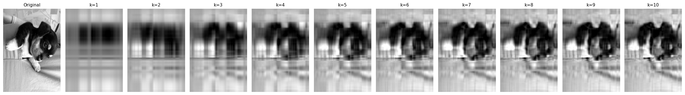
Approximation error vs. k
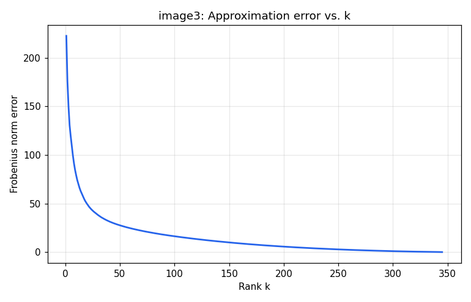
First eigenvector & first PC score
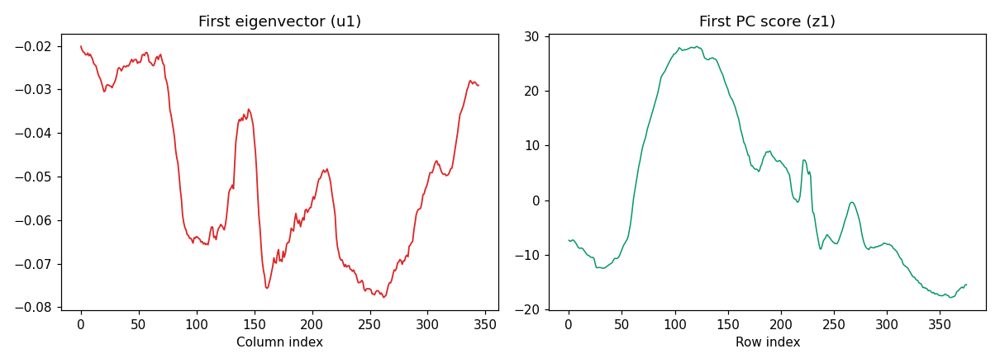
This is a natural photograph (a puppy against a light bedsheet). The first eigenvector dips lowest across the middle range of columns — the darker fur and shadow of the puppy's body — and rises back toward the lighter background at the left/right edges. The first PC score rises to its peak across the middle rows, where the puppy is vertically centered in the frame, and drops off toward the top and bottom rows where the lighter background dominates. Together, this first component alone produces the blurry, centered dark blob visible in the k = 1 and k = 2 reconstructions — a coarse "where is the dark subject" summary of the photo.
image4.csv 213 × 119
Rank-k approximations, k = 1..10
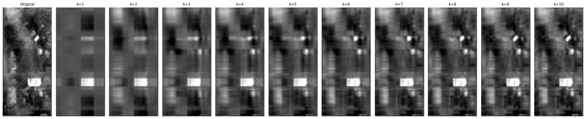
Approximation error vs. k
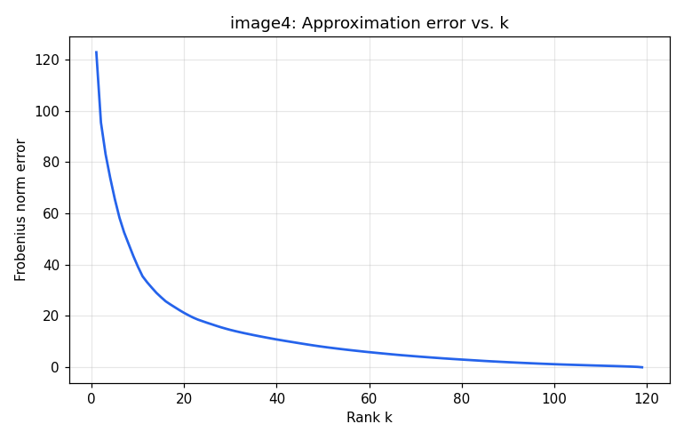
First eigenvector & first PC score
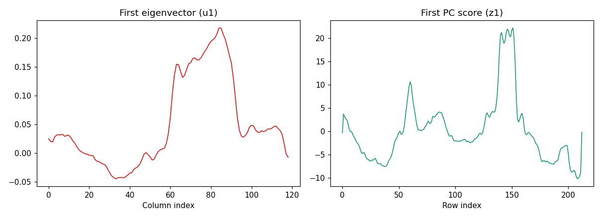
This looks like an aerial/satellite crop. The first eigenvector has a strong positive peak around columns 60–90 and a negative dip near columns 30–40, roughly separating a bright structure (a rooftop/object) from the surrounding darker vegetation. The first PC score has two pronounced peaks, around rows 60 and rows 140–150, lining up with the brightest features in the image (the small white object near the top and the bright rectangular marking lower down). This component's outer product is what produces the two bright blobs already visible in the k = 1 reconstruction.